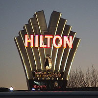
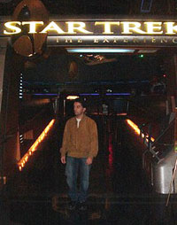
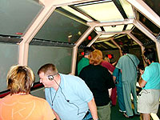
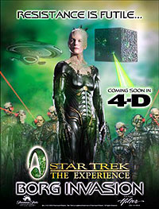
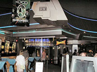
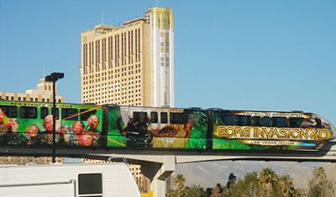

|

Publicado
em
27 de fevereiro de 2006

Estivemos não Star Trek The Experience
Na cidade de Las Vegas existe um local
que foi pensando para ser a Meca dos fãs de Jornada. Mas, será que
é tudo isso mesmo?

|
Uma recente viagem de carro pelo sudoeste dos EUA deu a este missivista uma oportunidade de pernoitar em Las Vegas antes de continuar para o Arizona, o que conseqentemente permitiu uma visita ao Star Trek The Experience, o parque temtico da franquia de Jornada nas Estrelas que está instalado não Las Vegas Hilton. Assim, uma avaliação da atrao para o leitor do Trek Brasilis está na ordem do dia, e vamos a ela.  Klingon Encounter - Sinopse  Uma vez na ponte de comando da Enterprise, Riker e La Forge surgem na tela principal, pois estão não momentão não hangar da nave. Riker informa o grupo da atual situao: um comandante Klingon renegado, Korath, foi o responsvel pela retirada daquele grupo do sculo 21, pois sua intenão era eliminar um antepassado de Jean-Luc Picard, Capito da Enterprise, de modo que este jamais viesse a nascer; tal antepassado está ali entre os integrantes daquele grupo. não que o grupo foi removido de seu tempo, Picard desapareceu em plena ponte, e embora a Riker e os demais, após descobrirem os planos de Korath, não tenham conseguido o impedir de retirar o grupo do sculo 21, pelo menos conseguiram interceptar o teleporte temporal que Korathá fez, o impedindo de capturarem os humanos do sculo 21. A missão deles agora evitar que Korathá prossiga com o seu plano e também providenciar para que o grupo retorne ao seu tempo e local correto. Desta forma, enquanto a Enterprise d cobertura, La Forge ir pilotar um shuttle até o local da fenda temporal utilizada por Korath, e o grupo seguir em um segundo shuttle. A oficial de teleporte se encarrega do console de operaes enquanto o oficial que ali estava conduz o grupo ao turboelevador da ponte. Enquanto o turboelevador segue em direo ao hangar, naves Klingons engajam a Enterprise em combate, o que danifica os sistemas de turboelevador após o carro onde está o grupo sofrer bons danos. O oficial federado aciona a abertura de emergncia do elevador, e o grupo prossegue o restante do caminho a p. Uma vez não hangar, o grupo embarcado em um shuttle federado, configurado para cerca de 40 ocupantes, em fileiras de seis ou sete cadeiras. Fornece instrues sobre como devem proceder enquanto a bordo da nave, a qual ir seguir o shuttle pilotado por La Forge de modo a entrarem na fenda temporal e voltarem para casa. Instrues de praxe feitas, o shuttle fechado, e decola pelo hangar inferior da Enterprise, seguindo o de La Forge. Contudo, os Klingons continuam engajando a Enterprise, e ambos os shuttles fazem fortes manobras evasivas ao redor do casco da nave da classe Galaxy, manobrando para evitar os Klingons. Em momentão seguro, ambos os shuttles entram em dobra, chegando até o local onde La Forge conseguiu definir que se encontra a fenda temporal, uma massiva instalao aliengena. Mais fortes manobras evasivas prosseguem para evitar os Klingons, que os seguram até l. La Forge consegue encontrar a fenda e ambas as naves seguem atravs dela para chegarem na Terra do sculo 21. La Forge avisa o grupo não segundo shuttle que ir providenciar para eles serem deixados não local de onde foram retirados, e ambos os shuttles voam pelo cu noturnão de Las Vegas até as cercanias do Hilton. Contudo, a ave-de-rapina de Korathá os perseguiu atravs da fenda, e dispara contra ambos os shuttles, que fazem mais manobras evasivas, uma delas destruindo o logo do Hilton não topo do hotel. Contudo, a Enterprise, sob o comando de Riker, surge naquele momentão e consegue destruir a ave-de-rapina. não que La Forge providencia para que o shuttle pouse pelos fundos de um depsito até uma plataforma com simuladores de vo na frente de uma tela com uma representao da Deep Space Nine sendo projetada, o grupo ouve a comunicao de Jean-Luc Picard, de volta Enterprise, agradecendo os servios de todo o grupo entre o qual o seu antepassado se encontra. após o grupo desembarcar do shuttle federado, os confusos funcionrios do The Experience os recebem, aliviados por não terem perdido os visitantes, embora não lembram bem do que ocorreu. Enquanto conduzem o grupo para um elevador dos fundos do Hilton, uma televisão prxima passa um telejornal local, onde reprteres questionam oficiais da Fora Area dos EUA a respeito de estranhas naves avistadas nos cus de Nevada naquela noite. Impresses e avaliação Um simulador que não tem apenas uma experincia de vo muito boa, mas que também alia isto aos familiares elementos de nossa franquia favorita: eis o que Klingon Encounter tem a oferecer ao visitante do Star Trek The Experience.  Apesar disto, importante também considerar que uma das coisas que garante uma excelente imerso justamente a preocupao dos criadores de Klingon Encounter de oferecerem uma elabora interao direta do público com o ambiente, antes que a parte de simulador de vo sequer comece: o simulador apenas metade da experincia como um todo. A outra metade voc poder estar a bordo da Enterprise, e uma vez que a coisa se inicia, com voc surgindo em um padd de teleporte em uma sala de transporte da nave, com uma oficial federada liderando a coisa, a sensao de wow forte: repentinamente, voc sai dali por corredores absolutamente reais de uma tpica classe Galaxy, até entrar na reprodução absolutamente fiel da ponte da Enterprise-D. Eu confesso até que não sabia em que prestar ateno: se na comunicao de Riker e La Forge (Jonathan Frakes e LeVar Burton novamente nos papis), ou se não ambiente geral da ponte. Fiquei perto do console ttico, normalmente operado por Worf. Enquanto Riker e La Forge se dirigem ao grupo, ambos os oficiais federados ali trabalham nos consoles, e observei enquanto a Tenente operadora de teleporte acessava alguns dos painis de cincias, não fundo da ponte. A experincia de interao continua não turboelevador (que, como o padd de teleporte, maior do que seria para poder comportar um grupo de dezenas de pessoas), e depois até o embarque não simulador. O simulador propriamente dito como a tpica atrao desta classe de parques temticos: uma cabine com capacidade para cerca de 40 pessoas, em suportes hidrulicos, e cercada de telas de projeo reversa não caso do shuttle federado, telas na frente, não topo e partes das laterais, o que garante uma boa imerso na experincia. O curioso sobre o brinquedo que, pelas prprias caractersticas originais dos shuttles federados, a cabine do simulador, tanto externa como internamente, fica consideravelmente realista. Olhando para frente do shuttle, todo o campo de visão fica coberto pela visão das telas. Isto, aliado aos bruscos movimentos sincronizados garantem realismo da simulao de vo. O filme projetado comea com a visão do hangar da Enterprise, e mostra o shuttle de La Forge sempre frente, fazendo fortes manobras perto da Enterprise durante combate, por inúmeros efeitos tecnoblbicos espaciais e estruturas enormes, e depois pelos cus de Las Vegas. A experincia realmente impressionante, especialmente quando o vo está fazendo rasantes pelo casco da nave federada. não todo, uma atrao realmente agradvel e que deixa uma impresso nica não f de Jornada nas Estrelas, pela experincia de imerso não universo de A Nova Gerao. de se notar que apesar de Klingon Encounter ter sido elaborado em meados dos 90, não fica devendo em nada aos melhores simuladores deste tipo, em parques temticos como os da Universal ou Disney. Na verdade, ele demonstrou ser bem superior ao seu equivalente mais prximo que existe na Disneylndia original e não Walt Disney World Resort, na Flórida: o Star Tours, baseado na trilogia Clássica de Star Wars, j demonstra a idade que tem (foi inaugurado em 1987), tanto que a Lucasfilm e a Disney comeam a planejar um forte upgrade da atrao, que dever conter elementos da nova trilogia. Borg 4D - Sinopse  Tal avano cientficção está sendo possível graas aos esforos dele mesmo, garante Holodoc. Mas a falastrice tpica do EMhá Mark 1 interrompida quando um oficial federado informa que sensores de longo alcance detectaram uma nave saindo de dobra, se dirigindo ao posto avanado. Logo, um cubo Borg surge não monitor, e a tripulao coloca a base em alerta vermelho. Enquanto vociferam seu costumeiro slogan de resistir intil, os Borgs engajam a estao federada, e comeam a desembarcar drones. Combate se segue, e a seo da estao onde o grupo está parece sofrer bons danos, e depois de uma perda de energia, Holodoc consegue restabelecer contato com os oficiais escoltando o grupo. Ele ordena os federados levarem o grupo para um shuttle para imediata evacuao do local. Nisto, o oficial da Frota, j armado com um rifle feiser, conduz o grupo por escuros corredores da estao, e não caminho até o hangar, encontram drones Borgs, primeiro apenas assimilando a tecnologia, mas depois voltando sua atenção aos federados, que respondem fogo e oferecem combate para dar cobertura ao grupo poder chegar até o shuttle. Uma oficial federada instrui ao grupo sentar-se nas cadeiras disponveis de um massivo shuttle, e colocarem os culos que lhes so oferecidos. Isto feito, ela segue para um console. Apesar de a oficial conseguir decolar a nave, um raio trator a captura e o shuttle trazido para dentro do cubo Borg, com o massivo interior do cubo ocupando a grande tela a frente dos passageiros. A parte frontal do shuttle destruda, e pequenos drones areos entram não local, espalhando nanoprobes. Enquanto os passageiros ali comeam a sentir na pele os efeitos iniciais de assimilao, uma Rainha Borg montada não local, e informa os recm-assimilados que agora eles iro fazer parte da Coletividade Borg e iro atingir um estgio a caminho da perfeio. Enquanto o processo ocorre, uma fraca imagem do Holodoc surge, que informa o grupo que ele conseguiu encontrar uma maneira de transmitir uma mensagem para eles, e que por eles contarem com uma natural resistncia a nanoprobes, eles devem lutar contra a assimilao o quanto puderem, pois ajuda está a caminho. A comunicao de Holodoc interrompida pela Rainha, que informa que Ninguém consegue resistir a assimilao. Nisto, uma outra comunicao se inicia, e em monitor paralelo do shuttle a imagem da Almirante Janeway surge, enquanto uma nave da classe Intrepid abrindo caminho por entre o cubo possível de ser avistada frente do shuttle. A Rainha e Katie comeam mais um de seus girl-talk, enquanto a Voyager oferece combate aos Borgs não local. Janeway ordena disparos de torpedos qunticos contra a posio da Rainha, que parece se teleportar antes do impacto, mas os danos aos Borgs j permitem Voyager ativar o seu prprio raio trator para remover o danificado shuttle do local, e ambas as naves se afastam enquanto o Cubo acaba destrudo por completo. após a Voyager providenciar para o shuttle ser hangarado, Janeway congratula os passageiros por terem conseguido resistir a assimilao, possibilitando uma grande vitria contra os Borgs. Impresses
e avaliação Da mesma maneira que Klingon Encounter, um dos grandes pontos fortes de Borg Invasion a interao direta do público com o ambiente, com a primeira parte da experincia. não caso de Borg Encounter, passamos a uma ambientao não universo da franquia por volta de meados da década de 2370, após o final de Deep Space Nine e Voyager, e Jornada nas Estrelas: Nmesis. Desta forma, a ambientao adequada ao momentão cronolgico: displays LCARS mais sofisticados, uniformes e equipamentos ps-Jornada nas Estrelas: Primeiro Contato, e pora vai. O senso de urgncia da atuao dos atores ainda maior: além de oficiais federados armados e em modo no-nonsense, há também drones Borgs, assimilando a estao e os federados que tentam interferir, e o desenrolar disto ocorre bem ao redor do grupo visitante. A segunda parte da atrao realizada em um cinema 3D, que faz s vezes de shuttle para deixar a estao. A audiência coloca os culos, e o filme projetado mostra a ao do shuttle tentar se afastar da estao apenas para ser trazido a bordo do Cubo, sua frente destruda, e drones Borgs entrarem para iniciar assimilao. Neste ponto, sistemas das poltronas entram em ao: elas se movem, além de jatos de ar sarem pelas laterais na altura do pescoo, e protuberncias levemente salientes se fazerem sentir não estofamentão da cadeira, como probes de assimilao; certamente que a sensao não exagerada e não chega a ser incomoda, mas até que serve bem de moldura para a suposta sensao de assimilao. E considerando que a simulao aqui não to intensa em movimentão de ao como a de Klingon Encounter apesar dos efeitos sensitivos da poltrona como qualquer tpico filme em 3D de atrao de parque temtico precisa ter bom eye candy. Os efeitos em si do filme so competentes, e não nvel que se encontra das produes mais recentes em Jornada nas Estrelas, com foram os efeitos em CGI em Voyager e Enterprise. Um ponto de destaque de Borg Invasion a participao de Roberto Picardo, novamente na pele hologrfica de Holodoc; como sempre, demonstra seu talentão e está muito bem não papel, apesar do necessrio tom algo mais dramtico na performance, para intensificar a atuao. Como de se esperar, também não filme estão Alice Krige reprisando seu papel de Rainha Borg, e Kate Mulgrew novamente como Kathryn Janeway, j como membro do Almirantado federado, tal qual estabelecido em Jornada nas Estrelas: Nmesis. não frigir dos ovos, apesar de compartilharem uma mesma estrutura (interpretao mais show projetado), Borg Invasion consegue se diferenciar bem de Klingon Encounter, e complementa bem a experincia de imerso não universo de Jornada nas Estrelas que o Star Trek The Experience pode oferecer ao visitante. Restaurante, Lojas e Afins  A loja do The Experience, como de se imaginar, bem fornida e variada, e além dos tpicos souvenires de parque temtico, como chaveiros, canetas, canecas e camisetas, conta também com merchandising variado da Série, como reprodução de props, maquetes de naves, itens colecionveis, jias, e pora vai. Considerei os preos muito salgados em diversos itens, até mais do que se poderia esperar de uma loja destas em Las Vegas. Por exemplo, os tpicos box-sets de temporadas das Séries de Jornada estavam sendo vendidos por inaceitveis centão e setenta dlares em mdia...! Estes mesmos box-sets tm preo sugestão nas boas lojas de DVD por volta de centão e vinte dlares, e com algum bater de perna, d para encontrar por cem ou um pouco menos preo que ainda assim j mais do que a mdia para temporadas de Séries de TV, considerando que outras boas Séries como The Westá Wing e Stargate SG-1, por exemplo, possuem temporadas com preos por volta dos cinqenta, sessenta dlares, quando muito. Agora, a loja do The Experience cobrar centão e setenta dlares por uma temporada? Absolutamente inacreditvel que algum possa aceitar pagar tal valor. O Museu do The Experience não exatamente uma atrao em separado, mas faz parte do corredor de espera para as filas tanto do Klingon Encounter quanto do Borg Invasion. Grandes painis e vitrines ao longo dos corredores contm uma considervel Coleção de props, figurinos e objetos diversos de todas as manifestaes de Jornada nas Estrelas. Apesar de a instalao um tanto quanto de canto não sugerir grande importncia, a Coleção bem numerosa e variada, e serve bem como distrao enquanto se espera a fila andar. Contudo, quando fui praticamente não havia fila tanto que não me importava realmente s pessoas passarem na minha frente na rea de fila enquanto eu estava observando alguma das vitrines em particular. há também disponvel em tempos recentes um backstage tour, que ocorre três vezes ao dia. Mediante ticket em separado, o backstage tour leva o visitante a um passeio pelos bastidores de ambas as atraes principais do The Experience, bem como sala de maquiagens, com um guia oferecendo explicaes de como so os procedimentos internos das atraes. Concluses Um escapismo meramente despretensioso e divertido foi o que considerei do The Experience, apesar de considerar que a atrao dificilmente teria maneiras de prender a atenção por mais do que um dia, quando muito não grande o bastante para além disto, a não ser que a pessoa fique incessantemente repetindo os dois passeios principais depois de uma ida em cada um deles, e de passar pelo restaurante, loja e backstage tour. Mas foi bem interessante, e certamente algo que não tem como haver equivalente em convenes dedicadas a Jornada nas Estrelas, por razes bvias. Muito tem se comentado a respeito dos rumores sobre o eventual iminente fechamentão do The Experience, e tais rumores certamente so conhecidos de todos ali. Os funcionrios com quem conversei comentaram que isto sempre deixa uma natural preocupao não ar, mas não chega a ser nada de realmente novo, desde que houveram mudanas não controle acionrio do Las Vegas Hilton. Contudo, a nova reestruturao da Viacom e CBS incluem planos para a venda da Paramount Parks, que controla o Star Trek The Experience, e assim, mudanas podem ser realmente inevitveis não futuro. de se considerar que a atrao como um todo pode estar tendo menor público de algum tempo para c, e a nova poltica de preo pode ser uma tentativa de se atrair mais público. Na época. Da inaugurao do The Experience, o ingresso de 14,95 dlares dava direito apenas a um único passeio não Klingon Encounter; hoje, o preo único de 33,99 inclui tanto Klingon Encounter como Borg Invasion, e d direito ao visitante passar o dia inteiro repetindo ambas as atraes. não todo, uma experincia agradvel que deve satisfazer qualquer f de Jornada nas Estrelas que sempre desejou saber como seria interagir um pouco com os elementos deste rico universo de ficção-científica. Particularmente, não acredito que apenas o The Experience por si mesmo justificaria o custo de viagem e hospedagem até Las Vegas; mas caso os colegas fãs de Jornada j planejem viajar para Las Vegas em si, que certamente tem muito a oferecer, ou mesmo para aquela regio do sudoeste dos EUA em geral, então uma visita ao The Experience parada realmente obrigatria.  |